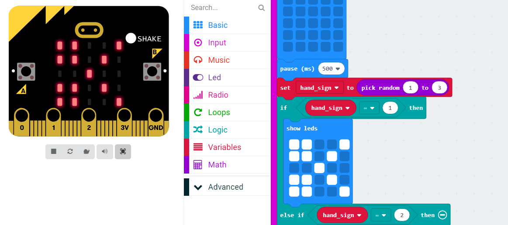

Workflow: MicroBit
In this assignment, we were to explore one of the features of the embedded system, the MicroBit. We were to code something that used our assigned feature using the tutorials on the MicroBit website. Our feature was the Accelerometer which measures acceleration forces and can therefore detect movement in the three dimensions: x, y and z. We created a game of Rock, Paper Scissors between two MicroBits that used the accelerometer to select one of the three game options.
Impact on Me as a Student
This helped me to learn more about how the fundamental concepts behind basic coding principles and syntax. The block coding system used in making applications for the MicroBit helped to strenghten my understanding of the fundamental logic and functionalities of code. I was able to learn more about computers as a whole and how they work and their functions and capabilities. The workflow here was similar to what a normal programming workflow would be like because I was coding just using a different system. While I have coded before this class and understand the workflow, this activity helped me to get back into it and understand more about the logic aspect of coding. With block coding, you don't have to worry about syntax and it allows you to focus more on how the code should work and the logic behind each piece. It helped me to appreciate the thinking process and the workflow that comes with that when you're programming.
How Will I use this to Continue Learning?
I will use this to continue learning about the many applications of computer science as well as the different physical resources available to help learn more about it. I will try and really think about what my code is supposed to do and what it's doing to create better programs that are also more efficient. For example, pseudocode is a commonly used method of planning out code and the logic behind it before actually developing a program and write the syntax. I can use pseudocode to layout code and plan out the logic so that the code will be easier to make and the workflow will be smoother.